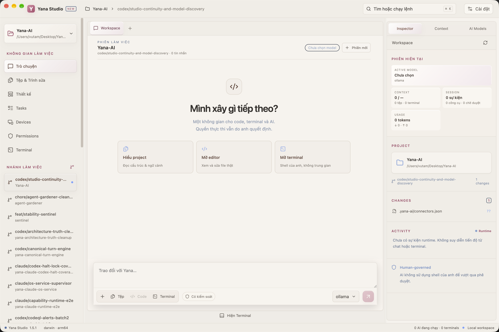
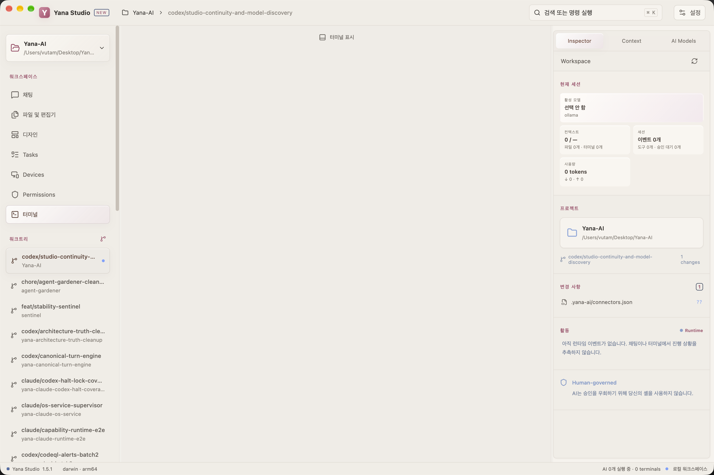

WORKSPACE
Real code and terminal
CodeMirror, project-wide file search, multi-tab PTY, split panes, search and scrollback.
workspace/
├─ app
├─ components
└─ tests
terminal 3 sessionsYANA STUDIO 1.5
From goal to code, terminal, review and evidence — every step lives on one clear surface, with authority never hidden behind a chat box.
npm test · Allow onceREAL APP SCREENSHOTS
Two screenshots taken directly from the latest build, crossfading every few seconds.


WORKSPACE
CodeMirror, project-wide file search, multi-tab PTY, split panes, search and scrollback.
workspace/
├─ app
├─ components
└─ tests
terminal 3 sessionsCONTEXT
Attached files, project memory, Git, terminal and token budget are all visible, not hidden.
CONTEXT
3 files
1 terminal
34 project facts
18.2K / 128KREVIEW
Inline diff comments, an activity timeline and the permission surface before you accept anything.
AI CHANGES 4 files
M App.tsx +42 -13
A Login.tsx +87
[Review] [Revert]MODEL PLANE
The official catalog is split by cloud and local provider so the UI never guesses a model name. Changing model never changes the runtime's authority.
DESIGN CANVAS
Canvas is experimental today; the direction is Design → Code → Run → Inspect, not a disconnected editor bolted on the side.